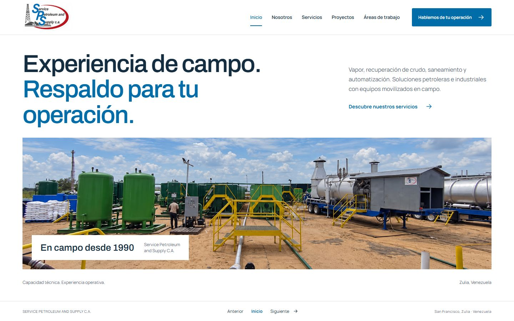
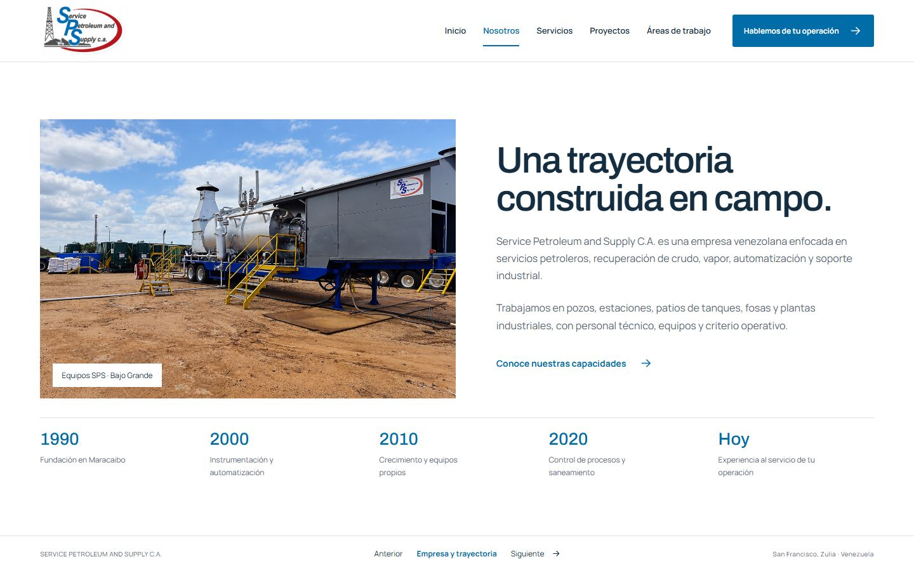
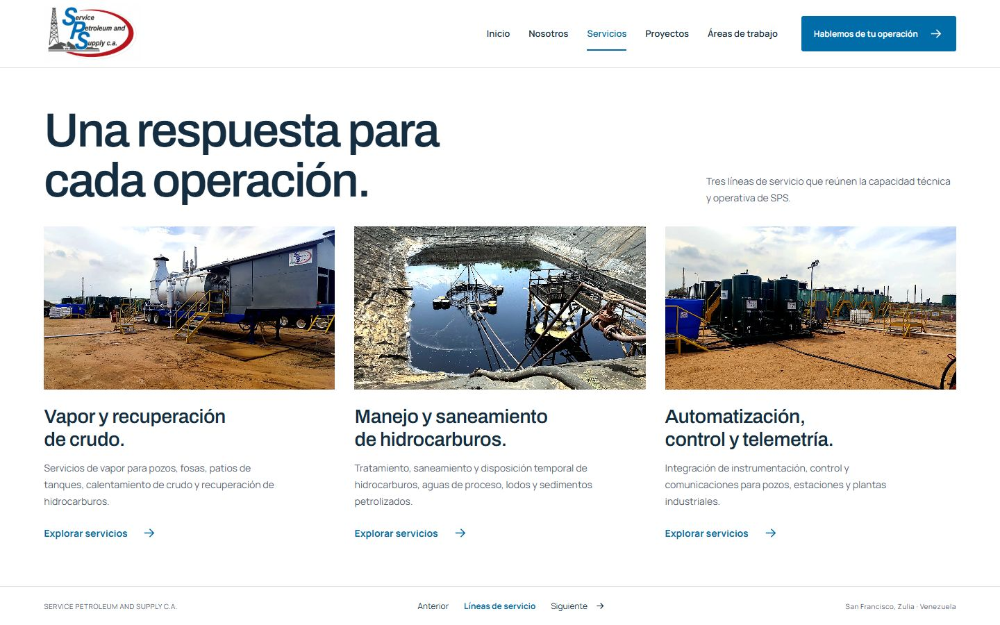
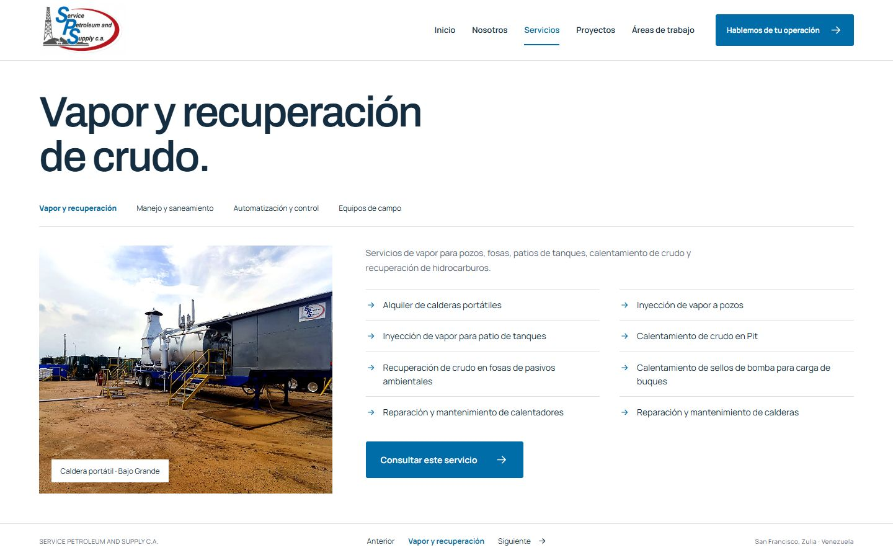
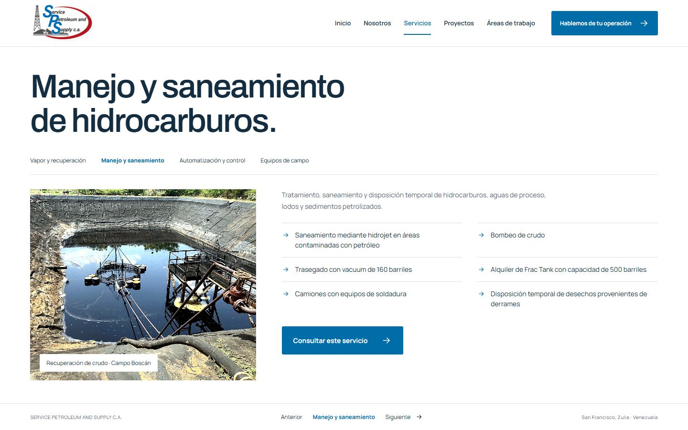
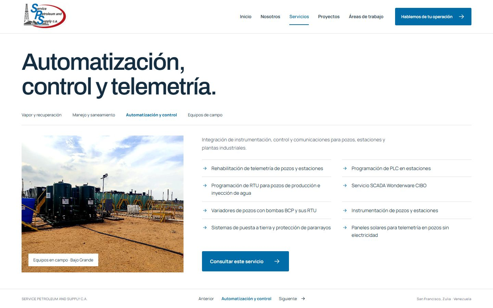
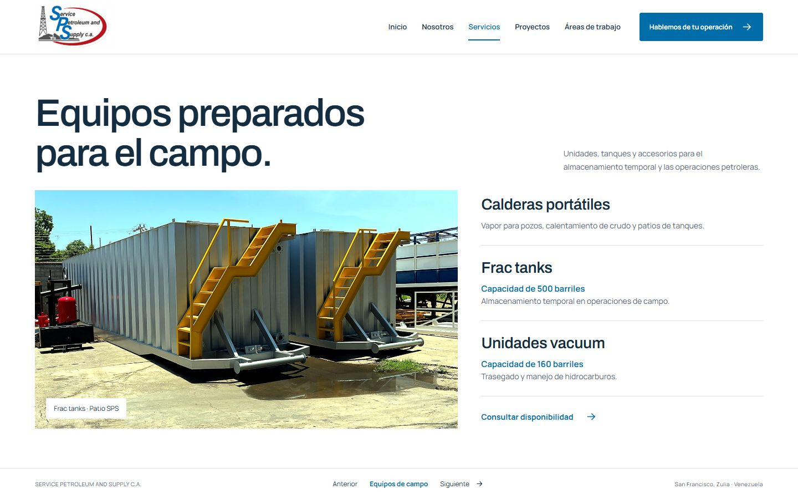
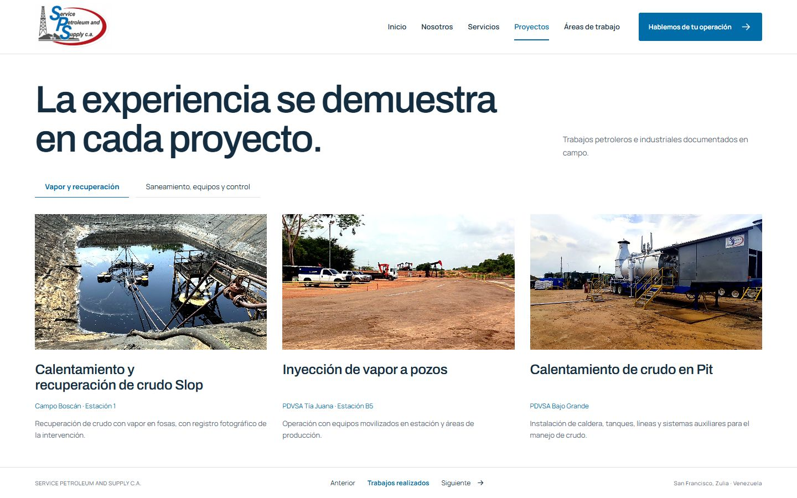
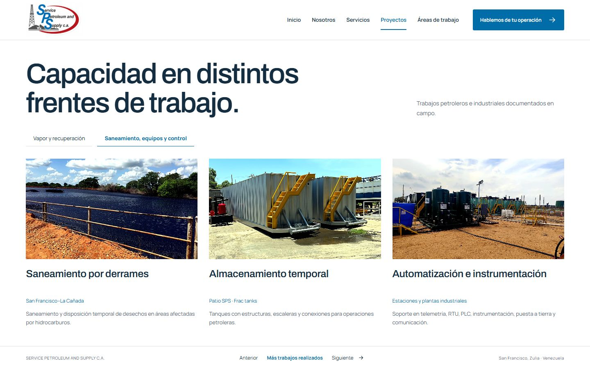
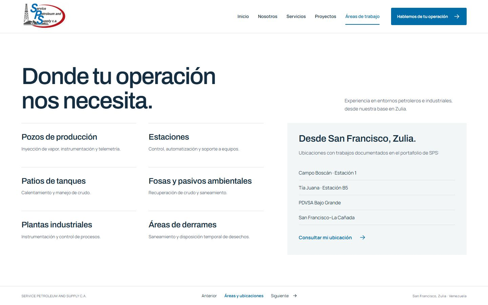
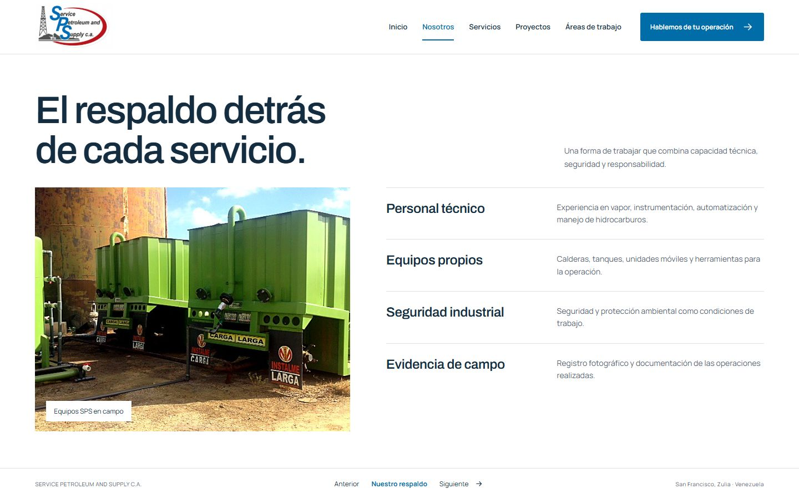
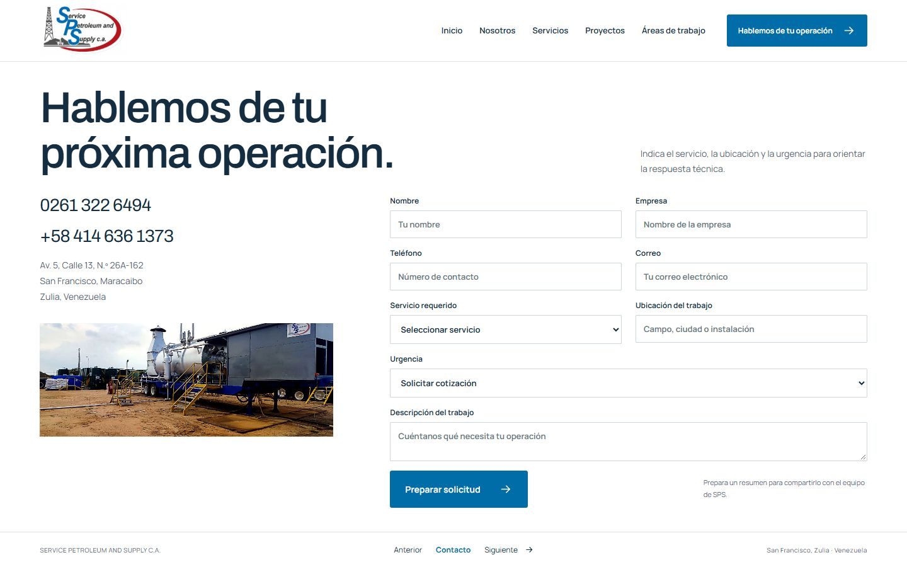
12 vistas de escritorio a 1440 × 900. Haz clic en cada imagen para verla completa.
Propuesta visual con contenido y fotografías del proyecto; dos fotografías tienen retoque generado por IA.











